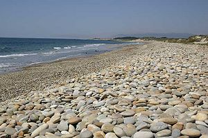

Fuerza de voluntad
 De: La Frikipedia, la enciclopedia extremadamente seria.
De: La Frikipedia, la enciclopedia extremadamente seria.
La fuerza de voluntad (FDV) es un verbo cuya declinación del presente simple sería:
- Yo no tengo
- Tú no tienes
- Él no tiene
- El cabronazo ese si tiene y por eso ha sido el único en sacarse la carrera a curso por año.
Sin embargo, puede ocurrir, que en un momento determinado, consigas, con todas tus fuerzas, reunir la fuerza de voluntad necesaria para ponerte a estudiar en este mismo momento. El problema es que el destino quiere que suspendas, y justo entonces te llamarán para que vayas a la fiesta del siglo, que no se repetirá ni en un millón de años.
Hace falta FDV para leer este libro
¿Para qué sirve?
Con la fuerza de voluntad necesaria, conseguiremos escapar de una vida de diversión y excesos, para hacer lo que se supone que tenemos que hacer. En caso de conseguirlo podremos:
- Terminar el trabajo que tenemos que entregar dentro de una semana, antes del próximo mes.
- Despertarnos antes de que queden cinco minutos para llegar al curro.
- Conseguir un milagros).
- Empezar a estudiar para los exámenes antes del 1 de junio.
- De no haber conseguido lo primer, empezar a estudiar para los exámenes en verano antes del 1 de septiembre.
- De no haber conseguido esto, empezar a ahorrar para la matrícula del próximo año, cuyo precio se habrá triplicado por ser matriculación de tercer año.
 Se necesita FDV para contar todas estas piedras
A qué nos dedicamos cuando no aparece la puta la FDV
Como ni yo, ni tú, ni él, tenemos fuerza de voluntad, nos dedicaremos a hacer todo tipo de cosas para evitar ponernos a hacer lo que se supone que tenemos que hacer.
Si por ejemplo, tenemos que estudiar para el examen de mañana, está completamente prohibido hacer todas las cosas que nos hemos prohibido hacer, pero la falta de FDV nos obliga a ciertas actuaciones:
- Escribir un artículo en la Frikipedia sobre la fuerza de voluntad.
- Buscar en Internet la capital de Toledo
- Como hemos desinstalado todos los juegos que teníamos, para evitar tentaciones, no echaremos 5.000 partidas de buscaminas antes de empezar a estudiar, mientras estudiamos y mientras descansamos del estudio.
- Buscaremos en Google exámenes ya hechos, y ya de paso el significado de la palabra tungsteno.
- Pasaremos los apuntes a limpio con colorines y dibujos, después los pasaremos al ordenador, para poder imprimirlos cuando nos hagan falta.
- Limpiaremos las ventanas de toda la casa, es algo que había que hacer tarde o temprano.
- Cocinaremos la comida de toda la semana, porque también es algo que había que hacer antes o después.
- Entraremos en el Fulanito para resolverte una duda.
- Limpiar el teclado, desmontando y limpiando tecla por tecla, porque la suciedad no te deja concentrarte.
- Al darte cuenta que la fuerza de voluntad no se estabiliza, decidir que tal vez trabajes mejor en el salón con el portátil (aunque sabes que allí está la tele). Como el portátil da algunos problemas, lo suyo para trabajar bien sería reinstalar el sistema.
Otro tema muy diferente es intentar adelgazar o ponernos en forma. En este caso, más que acciones, nuestro cerebro se busca las conclusiones más absurdas para no accionarnos de ninguna forma:
- Escribir 300 ppm tiene que quemar calorías por webos (lo mismo para el zapping).
- Todo el mundo dice que la ensalada no engorda (por mucho que te engañes, una ensalada de pasta con mayonesa engorda).
- Hoy he tenido que subir por las escaleras. Habrá que dejar lo de hacer Deporte para mañana.
- Según la ley de la conservación de la grasa si adelgazo sería culpable de que otro engorde.
- La belleza está en el interior.
Consecuencias de la falta de FDV
Si hay algo que provoque peores consecuencias que la falta de FDV, es precisamente la falta de FDV. Las cosas al final habrá que hacerlas antes o después, pero al final siempre se terminarán en el último segundo, del último min. del último día en el que se termina el plazo. Esto normalmente degenera en entregar una auténtica chapuza, hacer un examen de mierda o terminar con un familiar, amigo o conocido muerto. Esto último suele ocurrir por tu falta de FDV para subir los diez pisos que te separan a ti de la azotea desde la que el individuo intenta suicidarse.

Ten FDV paran no reírte de ellos
Cómo conseguir fuerza de voluntad
En grandes superficies como el Carrefour, o pequeñas como el Día tienen cajas de FDV en la sección de congelados. Pero evidentemente, esto no sirve para nada.
Son muchos los que dicen que la fuerza de voluntad es como la inspiración. Que llega justo cuando te vas a dormir, momento en el que ya es demasiado tarde para hacer nada. Y vuelve desaparecer cuando te despiertas por la mañana. Porque la fuerza de voluntad puede ser muchas cosas, pero sobre todo es una zorra.
Autor(es):
- Frikiman
- Aque
- Alcamy
- Cibercrank
- Mel-o
- Kevrochi
- Musico
- Ricardoxxxlo
- The jazziest
- Por que es gilipollas
Frikipedia 2005-2016, Licencia
GFDL 1.2 - Extraído por FrikiLeaks